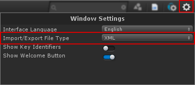
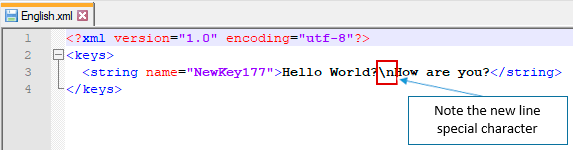
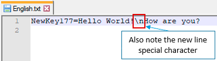

CGLocalization
For each language an Options button is available. The next figure show the available options:
Set as Default
Select Custom Icon
This options allow you to select a custom icon for a language. Custom icons are displayed in the popup menu of the CGLocalization window toolbar and in the Languages window:
Custom icons in the popup menu and in the Languages window
They are also shown in the HierarchyView in gameobjects that has the ChangeLanguage script attached:
Custom icon in a ChangeLanguage gameobject
Delete
Delete the language.
Export String Values
Export all keys of String type into a file.

The Import/Export file type option

The string values exported to the xml format

The string values exported to the text format